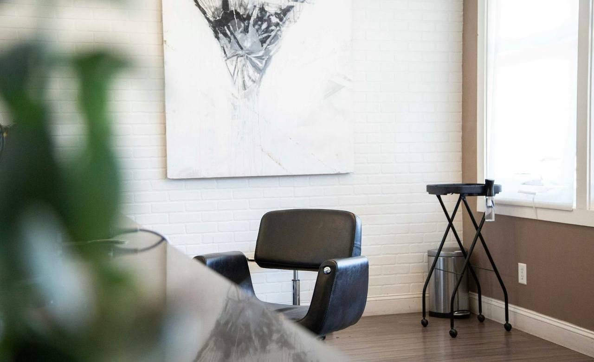
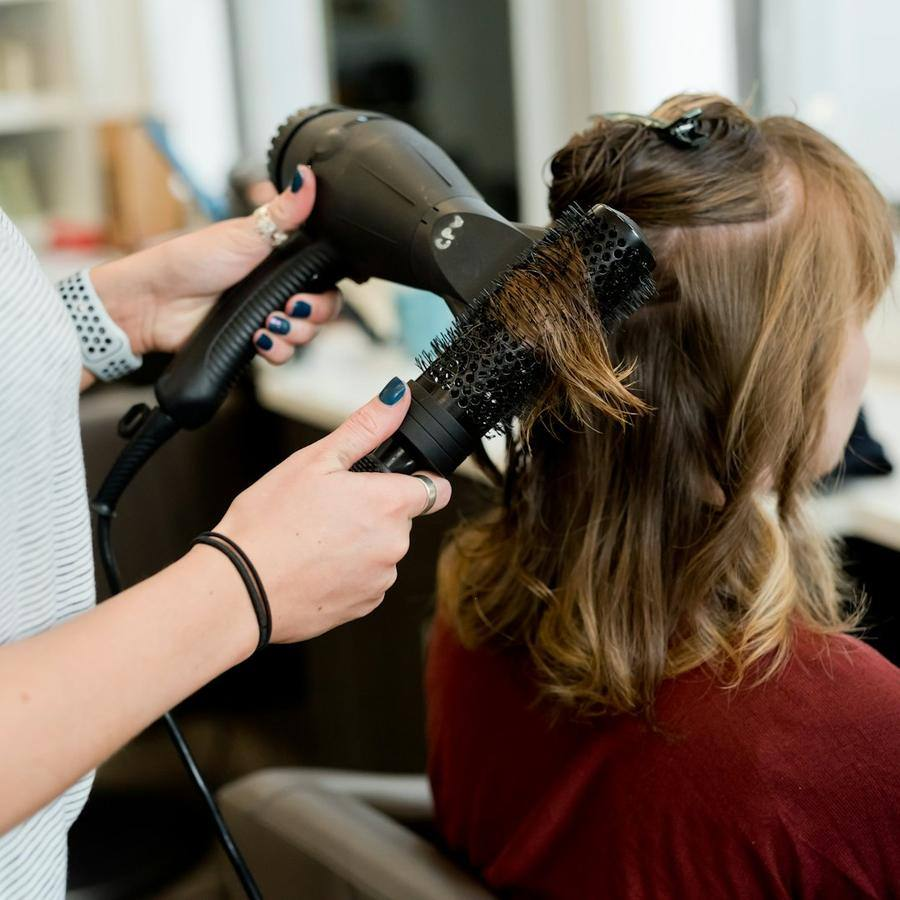
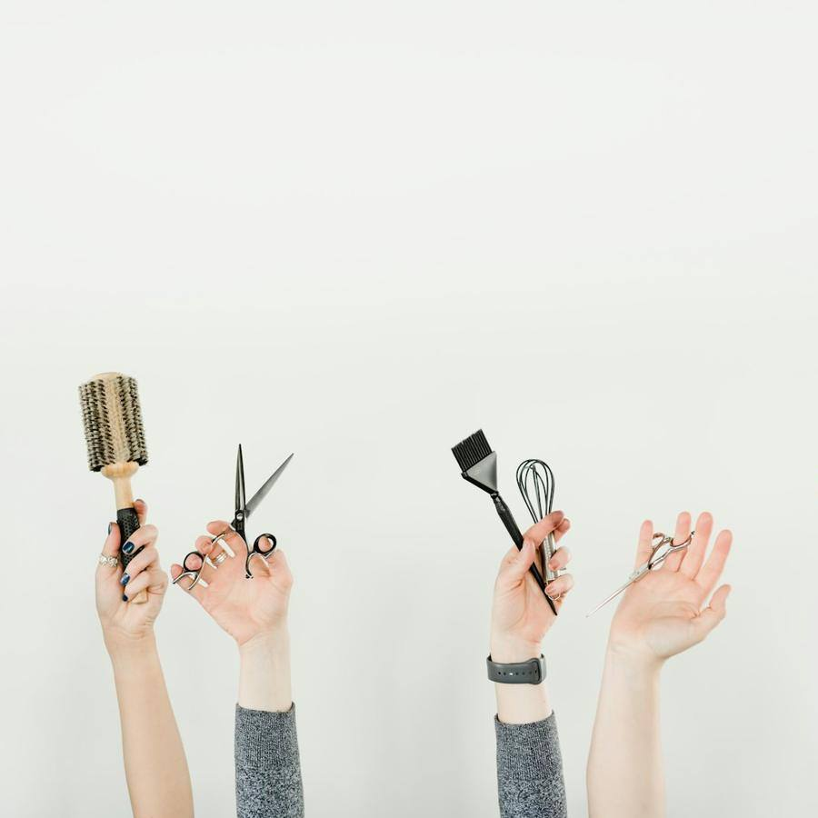

Peluquería · San Blas, Alicante
Corte y color pensados para ti
Escuchamos antes de cortar. Cada servicio empieza con cinco minutos para hablar de lo que quieres y de cómo lo vas a peinar en casa. Color sin amoniaco y productos veganos.
Por qué Corte & Color Studio
Lo que nos diferencia
Asesoría sin coste
Te decimos qué te favorece y cómo mantenerlo en casa.
Color sin amoniaco
Tintes vegetales y productos veganos que cuidan el pelo.
Cita en un minuto
Eliges servicio, estilista y hora desde el móvil.
Balayage de verdad
Mechas pintadas a mano, con matiz incluido.
Peluquería
Servicios
Precios para pelo medio. En pelo largo o muy denso te lo decimos antes de empezar.
Corte

Corte y peinado
28 €Lavado, corte y secado. 45 minutos.
favoritoCorte hombre
16 €Tijera o máquina. 30 minutos.
Corte infantil
14 €Hasta 10 años.
Color
Color raíz
38 €Tinte sin amoniaco. 60 minutos.
favoritoMechas balayage
desde 75 €Pintadas a mano, con matiz. 2 h 30 min.
favoritoGloss de brillo
20 €Matiza y da luz al color. 20 minutos.
nuevo
Cuidado y eventos
Tratamiento hidratante
18 €Mascarilla profunda con masaje.
Alisado de keratina
desde 120 €Hasta 4 meses sin encrespado.

Peinado de evento
35 €Recogido o ondas para bodas y fiestas.
Galería
Pásate a verlo
Fotos del local y de lo que hacemos. Pulsa para verlas en grande.
Reseñas
Lo que dicen de nosotros
Reseñas de ejemplo: en tu web van las tuyas, enlazadas a tu ficha de Google.
- Bea M.hace 5 días5 de 5
Por fin alguien que me pregunta cómo me peino antes de cortar. Me lo dejaron justo como quería.
- Natalia S.hace 2 semanas5 de 5
El balayage más natural que me han hecho. Y me explicaron cómo cuidarlo.
- Rosa P.hace 1 mes5 de 5
Tengo el cuero cabelludo sensible y con su tinte no me pica nada.
- Adrián L.hace 3 semanas4 de 5
Buen corte y buen trato. A veces se retrasan unos minutos.
- Claudia V.hace 2 meses5 de 5
Me peinaron para la boda de mi hermana y aguantó toda la noche.
Pedir cita
Tu cita en tres pasos
- 1
Elige servicio
Ves cuánto dura y el precio.
- 2
Elige estilista y hora
Solo los huecos libres de verdad.
- 3
Recordatorio
Te avisamos el día antes por WhatsApp.
El equipo
Quién te atiende
Marta Ruiz
Fundadora · Color
Quince años pintando mechas a mano.
Dani Ortega
Corte
Cortes con forma que se peinan solos.
Lucía Ferrer
Eventos
Recogidos y ondas que aguantan toda la noche.
Visítanos
Dónde estamos
Horario
| Lunes | 10:00 – 20:00 |
|---|---|
| Martes | 10:00 – 20:00 |
| Miércoles | 10:00 – 20:00 |
| Jueves | 10:00 – 20:00 |
| Viernes | 10:00 – 20:00 |
| Sábado | 10:00 – 14:00 |
| Domingo | Cerrado |
Cómo llegar
- Tranvía L2, parada San Blas
- Zona azul en la misma calle
- Local a pie de calle, accesible
Contacto
¿Hacéis prueba de color?
Sí, en la primera visita valoramos tu pelo antes de aplicar color.
¿Puedo pedir cita para varias personas?
Claro, indícalo en la reserva.
¿Cuánto dura un balayage?
Entre dos y tres horas, según el largo y el resultado que busques.
¿Vendéis los productos que usáis?
Sí, y te decimos cuál te va mejor.
¿Quieres una web así para tu negocio?
Corte & Color Studio es un negocio inventado: esta página es una plantilla de ejemplo. La adapto a tu negocio con tus fotos, tus precios, tus reseñas y tu forma de reservar. Pruébala tal cual: la reserva funciona, pero no envía nada a nadie.
- Carta o servicios por categorías, galería y reseñas
- Reserva o cita en pocos pasos, con aviso por WhatsApp
- Lista para el móvil, rápida y sin cookies de terceros
- Aviso legal, privacidad y cookies incluidos